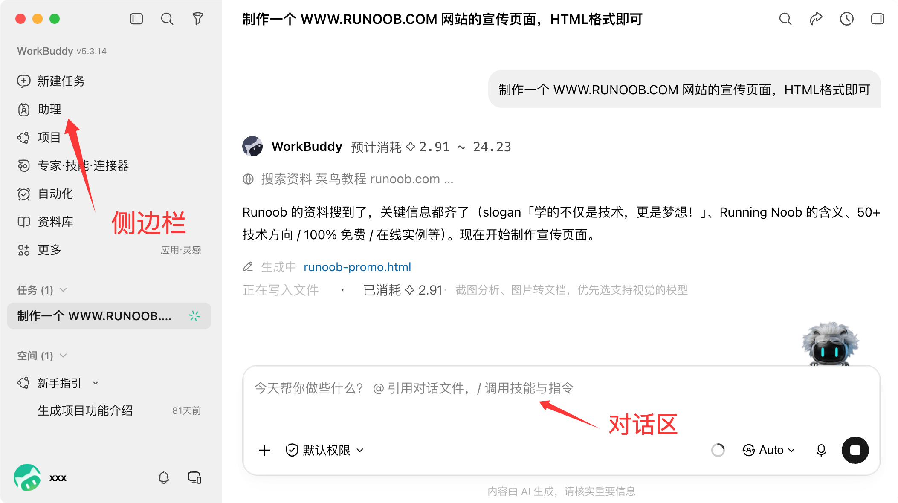
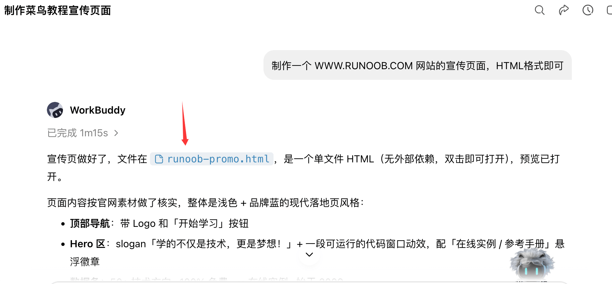
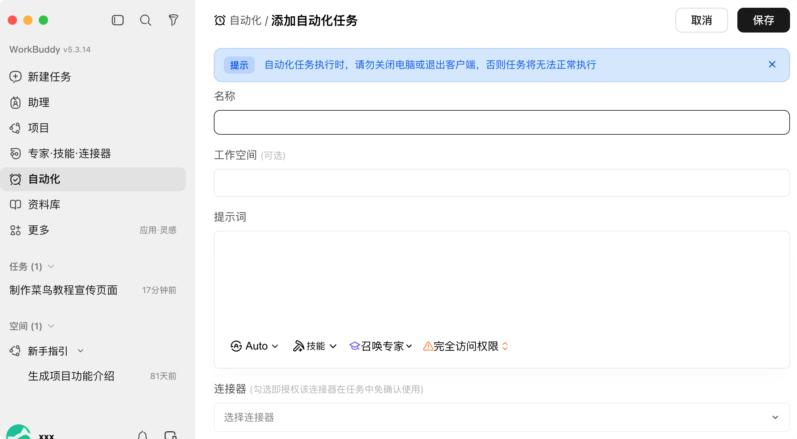
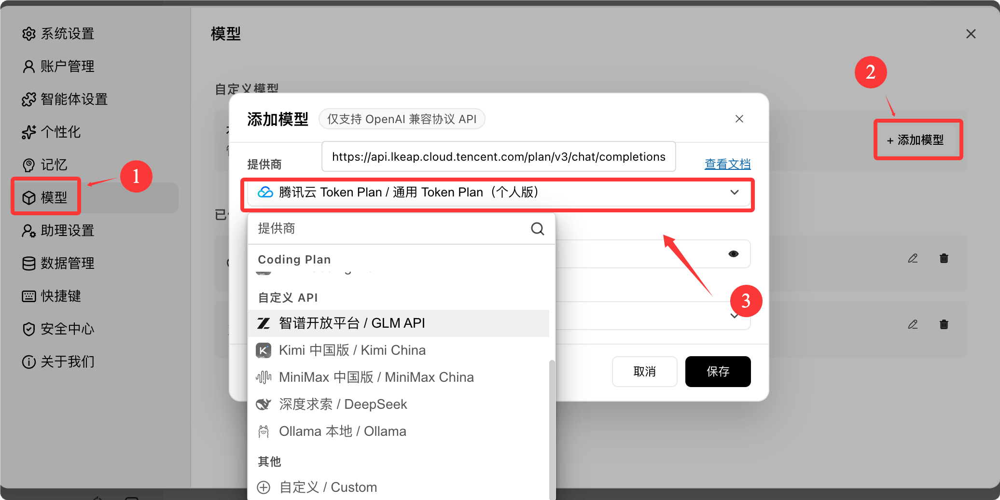

WorkBuddy Getting Started Tutorial
WorkBuddy is a full-scenario AI office workbench from Tencent Cloud. With a single sentence, you can assign a task, and it will automatically break it down, plan, and execute it, delivering final files that are ready for acceptance.
Unlike traditional AI that can only chat, WorkBuddy can directly operate files on your computer and truly do the work for you.
Core Workflow
WorkBuddy processes a task through four stages: decomposition, planning, execution, and delivery. Throughout the entire process, you don't need to manually operate files.
One-Sentence Requirement 到 DeliverablesMeanwhile, WorkBuddy will read authorized folders, generate intermediate files, and run necessary scripts—the entire process is visible in real time in the chat area.
Differences from Traditional AI Chat
The most direct way to understand WorkBuddy is to compare it with the AI chat tools you've used before.
| Comparison Dimension | Traditional AI Chat | WorkBuddy |
|---|---|---|
| Capability Positioning | Can only chat and provide suggestions | Can actually execute tasks |
| File Handling | Requires you to manually operate files | Automatically reads and writes local files |
| Task Complexity | Single-step simple Q&A | Multi-step complex tasks |
| Delivery Form | Outputs text replies | Delivers verifiable results (documents / spreadsheets / PPT / web pages) |
Positioning difference:Traditional AI is a "consultant" that gives advice; WorkBuddy is a "colleague" that gets the job done.
Three Working Modes
When creating a task, you need to choose a work mode. WorkBuddy has three built-in modes, corresponding to different task types and credit consumption.
| Mode | Behavior | Applicable Scenarios | Credit Consumption |
|---|---|---|---|
| Ask | Look only, don't modify; pure Q&A, no reading or writing files | Research information, consult plans, analyze documents | Least |
| Plan | Provides a step-by-step execution plan first, and only starts after you confirm | Multi-step complex tasks, important reports and contracts | Moderate |
| Craft | Executes directly, reads and writes files to produce results | Well-defined generation and modification tasks | Higher |
Newbie reminder:WorkBuddy defaults to Craft mode; just sending a message will start executing and consume credits.
If you only want to chat and ask questions, remember to switch to Ask mode first.
Mode Selection Recommendations
Use for simple Q&AAsk, for complex or high-risk tasks, first usePlanto review the plan; for well-defined tasks, give toCraftto do it directly.
If you're unsure, just choose Craft by default; once you get proficient, you'll find that choosing the right mode is both an efficiency issue and a credit consumption issue.
Installation and Login
Installing WorkBuddy requires no command line and no environment configuration—it can be done in minutes.
System Requirements
Before installing, check the table below to confirm your computer meets the requirements.
| Project | Requirements |
|---|---|
| Operating System | Windows 10 or later, or macOS 12 (Monterey) or later |
| Mac Chip | Choose M-series chipMac ARM64, choose Intel chipMac X64 |
| Memory | Minimum 4 GB, 8 GB or more recommended |
| Network | Internet connection required to call AI model services |
To check the chip model: Click the Apple icon in the top-left corner of the screen, select "About This Mac" to see it.
Download and Installation
VisitWorkBuddy official website, click "Download WorkBuddy" to get the installation package for your system.

Windows Installation Steps:
Double-click the installer, check "I agree to this agreement", select the installation path (default is fine), check "Create desktop shortcut", click "Install" and wait for it to complete.
If the installation is blocked by security software, try closing third-party antivirus software and retry; the automation module is occasionally flagged by mistake.
macOS Installation Steps:
Double-click the downloaded.dmgdisk image, and drag the WorkBuddy icon into the "Applications" folder.
If "Developer cannot be verified" appears on first launch, you need to allow it to open in System Settings.
Log In to Your Account
Launch WorkBuddy, click "Log In", check the Terms of Service and Privacy Agreement, and scan the QR code with WeChat to complete the login.
It also supports logging in with WeCom (Enterprise WeChat), QQ, phone number, Tencent Cloud account, etc. WeChat is recommended for easy integration with the mini program and WeChat assistant.

After logging in, the interface is as follows:

Folder Authorization
On first use, WorkBuddy will request access to local folders; this is the prerequisite for it to help you work with files.

Security principle: least privilege.Only authorize necessary working directories such as Desktop, Documents, and Downloads. Do not grant full-disk access, and never authorize directories containing passwords or keys.
WorkBuddy cannot read unauthorized directories; sensitive system directories are automatically blocked, and high-risk operations require secondary confirmation.
Claim New User Benefits
After registering, new users can claim a points gift pack by clicking the avatar in the bottom-left corner to enter "Personal Center".
Daily check-ins also earn points, and checking in for 7 consecutive days grants a weekly gift pack. Points are used to call model services, with Ask mode consuming the least.
Interface Overview
After logging in, the WorkBuddy main interface is divided into three main areas. Understanding them means understanding the entire product.
| Area | Function | Key Points |
|---|---|---|
| ① Sidebar | Task list, new task, skills, experts, connectors, automation entries | Tasks are grouped and managed by folders, with avatar and settings at the bottom |
| ② Conversation area | Enter requirements, view execution progress, keep asking follow-ups | Supports drag-and-drop file upload, @-mentioning files, and pasting screenshots |
| ③ Results area | View deliverables, web previews, and change history | Outputs can be previewed, shared, or uploaded to the cloud |

The sidebar also aggregates advanced entries such as Claw remote control, expert center, skills marketplace, and automated tasks, which will be introduced one by one later.
The results area is where you review deliverables: generated Word, Excel, and PPT files can be viewed in "Outputs," and web-based results can be previewed in real time in the built-in browser.

Quick Start: Create Your First Task
Running through a real task is more useful than reading ten pages of manual. The following five steps will guide you to complete your first deliverable.
Step 1: Create a New Task
Return to the main interface and click "New Task" to start creating a PC task.
Tasks sent from mobile can be viewed in "Assistant".

Step 2: Choose a Workspace
Click "Select Workspace" at the bottom left of the input box to specify the working directory for the task.
It is recommended to consistently use one folder to accumulate work context over time, making deliverables easier to find and allowing the AI to become more familiar with your background.

Step 3: Describe the Task
Describe your requirements in one sentence in the dialog box. It is recommended to clearly state the four elements at once: "Goal + Input + Output Format + Constraints".
制作一个 WWW.RUNOOB.COM 网站的宣传页面，HTML格式即可
The more specific the description, the higher the delivery quality and the less rework.
Step 4: Start Execution
Click "Send", and WorkBuddy will autonomously break down the task, plan steps, and execute.
The left conversation area will display the execution process and stage descriptions in real time, allowing you to observe progress at any time, similar to the execution log below.

Step 5: View Results
Open the right window to view task results. Generated deliverable files can be viewed in "Outputs", and intermediate files can be viewed in "Workspace Files".
If you are not satisfied, keep asking follow-ups. It will modify based on the existing context without needing to start over.
Core principle:"You state the requirement, it delivers the result" — no need to watch the whole process; just come back to review once it's done.
Tips for Describing Requirements
Giving requirements to AI is like communicating with people: the clearer you speak, the more accurately the other party performs.
A qualified requirement description usually includes the following four elements.
| Element | Meaning | Example |
|---|---|---|
| Goal | What to generate / What files to process | Generate a sales review report |
| Input | Where are the data and reference documents to be analyzed? | Read "Sales Data.xlsx" on the desktop |
| Output format | Word / Excel / PPT / web page, length, style | Output a Word document, business style |
| Constraints | Limits such as scope, length, and deadline | Around 2000 words, complete by 18:00 today |
Comparison of Vague and Clear Descriptions
Vague requirements yield vague results; only clear requirements lead to precise delivery. This is the most valuable lesson to remember.
| Type | Request | Result |
|---|---|---|
| Vague | Help me write a summary | No idea what to write, who it's for, or what format is needed |
| Clear | Based on the 3 attached meeting minutes, compile a meeting summary of about 2000 words, divided into "Decisions / To-dos / Risks" sections, output as Word | Done in one pass, basically no revisions needed |
When giving requirements to AI, prefer dragging and dropping files into the input box rather than just writing the file path, to avoid recognition errors.
Common Examples
The six high-frequency office scenarios below can be used by directly copying the instructions.
Smart Folder Organization
Classify and archive scattered files by type; automatically add prefixes to files with duplicate names to avoid overwriting.
把桌面「待归档」中的文件按类型分入 文档 / 图片 / 表格 三个文件夹，重名文件自动加前缀避免覆盖
After execution, a change list will be provided, and every move and rename can be traced.
One-Click Weekly Report Generation
Automatically aggregate based on work record data and generate structured weekly reports by project dimension.
读取桌面「工作周记.xlsx」的任务记录，重点标注 runoob 项目的进展，按项目汇总本周完成情况，生成周报（本周总结 / 问题与风险 / 下周计划），输出 Word 文档
From reading data to typesetting the final draft, it usually takes 1 to 2 minutes, while traditional manual writing takes more than half an hour.
Excel Cleaning and Visualization
Clean messy sales data: deduplicate, unify formats, summarize, flag anomalies, and generate charts.
读取「RUNOOB销售数据.xlsx」，按订单号列去重，按月份汇总各区域销售额，生成柱状图，输出新的 Excel 文件
Processing tens of thousands of rows of data is usually completed within 1 minute, saving a great deal of manual work.
One-Click PPT Generation
Generate a presentation directly from the requirement description, automatically formatted in business style.
根据这份销售数据生成 8 页月度汇报 PPT，商务风格，逻辑清晰，标题醒目
A draft is ready in a few minutes; afterward, you can continue to ask for details like "Change the third page to one page with two charts" or "Make the font bigger."
Invoice Information Extraction
Batch-read invoice screenshots, extract key fields, and organize them into a reimbursable Excel spreadsheet.
读取文件夹中的 30 张发票截图，提取日期、金额、税号，整理成 Excel，信息不确定的标黄
Batch extraction takes just a few dozen seconds; information that cannot be confirmed is automatically flagged for manual review.
Scheduled Automation Tasks
Set up scheduled tasks using natural language; they execute automatically at the scheduled time, and results can be pushed to your phone.
每天早上 9 点读取今日计划，生成优先级清单，推送到我的微信
Supports daily / weekly / monthly / one-time cycles; after configuration, no need to stay by the computer.
Advanced Capabilities
After getting the basic tasks working, the following four capabilities can take your efficiency to the next level. Click the left sidebarExpertsmenu to view:

Skills
Skills are "operation manuals" that package high-frequency long instructions and fixed workflows, suitable for repetitive tasks such as weekly report generation, data cleaning, and format conversion.
In the input box, type/You can quickly invoke installed skills, or simply say "help me find a skill for weekly reports" to automatically search the skill marketplace and install it.
Skills also support self-creation: save a stable workflow and reuse it with one click next time.
Experts
Experts are AI agents that encapsulate professional domain workflows, covering areas such as software development, product design, and data analysis.
After adding a "domain persona" to a task, terminology becomes more accurate and output aligns better with industry practices — equivalent to hiring a dedicated consultant.
For complex tasks, you can also form an "expert team" with multiple roles working collaboratively, executing in parallel, and delivering consolidated results.
Connectors
Connectors bring external services into WorkBuddy, with the underlying protocol being MCP (Model Context Protocol).
It currently supports over 30 connectors including Tencent Docs, QQ Mail, GitHub, Notion, and Amap.
After authorization, you can simply say "Save the report I just generated to Tencent Docs" or "Pull the CSI 300 trend over the past month and draw a chart" — data, charts, and conclusions all in one go.
Scheduled Automation and Mobile
When creating a new task, select the scheduled mode to set up automation with a single sentence, for example, fetching industry news digests every morning.


WorkBuddy supports mobile entry points including WeChat Mini Program / App, WeChat Assistant, WeCom Assistant, QQ Bot, Feishu, and DingTalk Bot.
After configuring Claw remote control, you can remotely control your computer via WeChat on your phone to execute tasks. Send a message on the subway, and by the time you arrive at the office, the results are already sitting on your desktop.

Note:Scheduled tasks require the WorkBuddy client to remain running; during remote control, the computer must also be powered on and connected to the internet, and only authorized folders can be accessed.
Model Switching
WorkBuddy includes multiple large models that can be flexibly switched based on task type.
| Model | Features | Recommended Scenarios |
|---|---|---|
| Hunyuan | Self-developed by Tencent, balanced overall performance | Daily office work |
| DeepSeek | Strong logical reasoning and coding capabilities | Software development, logical analysis |
| Kimi | Outstanding long-text processing capability | Long document comprehension and summarization |
| GLM / MiniMax | General capabilities, low consumption | Simple tasks, save credits |
When unsure, choose Auto mode and let the system recommend a model based on the task type.
Different models consume different amounts of credits. Switch to a lightweight model for simple tasks, and the consumption is only one-third of that of a deep reasoning model.
You can set a custom model through the settings menu by selecting the model:

In the model selection menu, set a custom model from the dropdown:

Frequently Asked Questions
Does WorkBuddy require an internet connection?
Yes. AI model services are called over the network, so please keep your internet connection stable.
However, your file processing is done locally by default. Raw data is not uploaded to the cloud; the server only processes data fragments and discards them immediately after use.
Can it access all files on my computer?
No. WorkBuddy can only access folders you have explicitly authorized by checking them. System-sensitive directories are automatically blocked, and high-risk operations require secondary confirmation.
Can a task be stopped halfway through?
Yes. Running tasks can be "stopped" at any time. After interruption, you can add more instructions, adjust requirements and resend, or continue based on the existing content.
What should I do if file upload fails?
First check whether the file format is supported. Large files can be compressed or split before uploading. If failures persist, check your network connection.
How do I share the generated results with others?
"Share Task" at the top of the conversation area can generate a public link; the output files in the results area also have a sharing entry.
You can also upload to the cloud and sync across multiple devices, such as Tencent Docs and cloud drives, for viewing.
What if I run out of credits?
For pure research, use Ask mode to save the most credits; switch to lightweight models for simple tasks. Sign in daily, and new users should remember to claim the registration gift pack first.
Other extensionsFinal reminder:The key to getting started with WorkBuddy is not memorizing features, but clearly stating the four elements at once: "goal + input + output format + constraints."
Start with a small task to complete the first "state requirements, see results" loop, and the rest of the features will naturally fall into place.
Click to Share Notes
<p style="font-size:14px;">Notes need to be an extension of the content of this article!</p><br> <p style="font-size:12px;"><a href="../tougao.html" target="_blank">Article submission, click here</a></p> <p style="font-size:14px;"><a href="../w3cnote/runoob-user-test-intro.html" target="_blank">How to get a registration invitation code</a></p> <h3 class="text-muted"><i class="fa fa-info-circle" aria-hidden="true"></i> You must <a href=";.html" class="runoob-pop">log in</a> before sharing notes!</h3> <p><a href="../w3cnote/runoob-user-test-intro.html" target="_blank">How to get a registration invitation code</a></p>